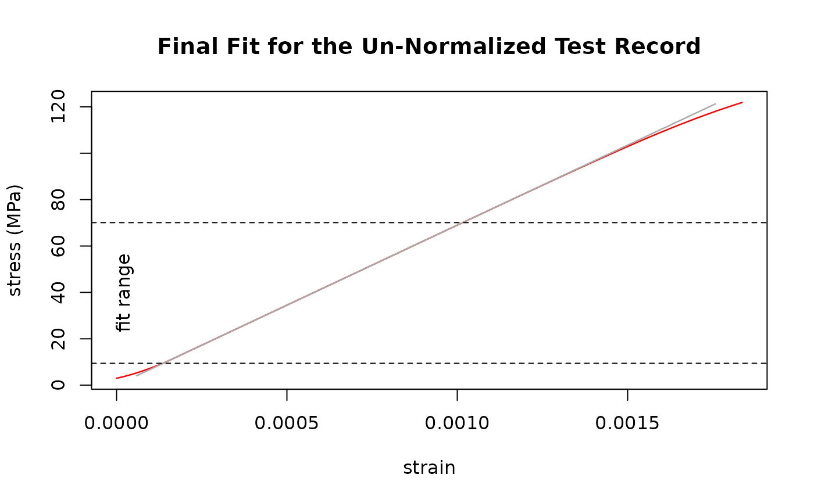

Run the SDAR algorithm as standardized in ASTM E3076-18. Will
use numerous linear regressions (.lm.fit() from the stats-package) and
can be painfully slow for test data with high resolution. See the article
Speed Benchmarking the SDAR-algorithm
for further information.
Arguments
- data
Data record to analyze. Labels of the data columns will be used as units.
- x, y
<
tidy-select> Columns with x and y within data.- verbose, plot
Give a summarizing report / show a plot of the final fit.
- plotFun
Set to
TRUEto get a plot-function for the final fit with the results for later use.- ...
<
dynamic-dots> Pass parameters to downstream functions: setverbose.all,plot.allandplotFun.alltoTRUEto get additional diagnostic information during processing data.
Value
A list containing a data.frame with the results of the final fit,
lists with the quality- and fit-metrics, and a list containing the crated
plot-function(s) (if plotFun = TRUE).
Note
The function can use parallel processing via the furrr-package. To use this feature, set up a plan other than the default sequential strategy beforehand.
References
Lucon, E. (2019). Use and validation of the slope determination by the analysis of residuals (SDAR) algorithm (NIST TN 2050; p. NIST TN 2050). National Institute of Standards and Technology. https://doi.org/10.6028/NIST.TN.2050
Standard Practice for Determination of the Slope in the Linear Region of a Test Record (ASTM E3076-18). (2018). https://doi.org/10.1520/E3076-18
Graham, S., & Adler, M. (2011). Determining the Slope and Quality of Fit for the Linear Part of a Test Record. Journal of Testing and Evaluation - J TEST EVAL, 39. https://doi.org/10.1520/JTE103038
See also
sdar_lazy() for the random sub-sampling modification of the
SDAR-algorithm.
Examples
# Synthesize a test record resembling EN AW-6060-T66
# Explicitly set names to "strain" and "stress",
# set effective number of bits in the x-data to 12
# to limit the number of data points.
Al_6060_T66 <- synthesize_test_data(
slope = 69000,
yield.y = 160,
ultimate.y = 215,
ultimate.x = 0.08,
x.name = "strain",
y.name = "stress",
toe.start.y = 3, toe.end.y = 10,
toe.start.slope = 13600,
enob.x = 12
)
# use sdar() to analyze the synthetic test record
# will print a report and give a plot of the final fit
# \donttest{
result <- sdar(Al_6060_T66, strain, stress)
#> Determination of Slope in the Linear Region of a Test Record:
#> SDAR-algorithm
#> Data Quality Metric: Digital Resolution
#> x
#> Relative x-Resolution: 0.333333333333333
#> % at this resolution: 0
#> % in zeroth bin: 100
#> --> pass
#> y
#> Relative y-Resolution: 0.333333333333333
#> % at this resolution: 10.752688172043
#> % in zeroth bin: 82.7956989247312
#> --> pass
#> Data Quality Metric: Noise
#> x
#> Relative x-Noise: 9.44216060311802e-15
#> --> pass
#> y
#> Relative y-Noise: 0.25059496508498
#> --> pass
#> Fit Quality Metric: Curvature
#> 1st Quartile
#> Relative Residual Slope: 0.000341884560090671
#> Number of Points: 12
#> --> pass
#> 4th Quartile
#> Relative Residual Slope: -0.00714862515119831
#> Number of Points: 12
#> --> pass
#> Fit Quality Metric: Fit Range
#> relative fit range: 0.784159272884657
#> --> pass
#> Un-normalized fit
#> Final Slope: 68997.5639839654 MPa
#> True Intercept: 0.00119126773051326 MPa
#> y-Range: 9.43511962890625 MPa - 70.074462890625 MPa

# }